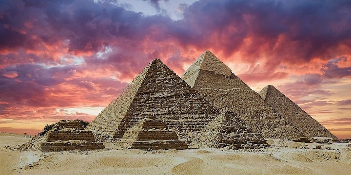

A Reflection of the Ancient and the Future
Welcome to my Humanities ePortfolio. My name is Matthew Owen, and I’m a cybersecurity major at BYU–Idaho who is always striving for growth—both in my technical skills and in myself. I enjoy thinking outside the box, approaching challenges with curiosity and creativity. Whether I’m diving into a complex system or reflecting on human behavior, I’m driven by a desire to keep learning and improving. This portfolio is one part of that journey.
This Humanities course has taken me on a journey through the ancient world—from Mesopotamia and both the Old and New Babylonian empires to the Greeks and Romans. As I studied these civilizations, I began to see that history isn't just a collection of old stories—it’s a reflection of real people who lived, struggled, believed, and built the foundations of the world we live in today. Seeing how deeply their ideas, values, and innovations still influence modern life helped me connect more with the human experience as a whole. It’s been eye-opening to realize just how much meaning and relevance can be found in civilizations thousands of years old.
As we explored themes like creation stories, heroic journeys, and the tension between fate and free will, I found myself reflecting not just on the ancient world, but on the patterns that still shape our own lives. These stories helped me understand what people valued, feared, and hoped for—and how those same questions still matter today. The course challenged me to think deeper about culture, identity, and the stories we choose to preserve. Studying the ancient world didn’t just teach me about the past—it helped me grow as a person, think more critically, and appreciate the complexity of human history and imagination.